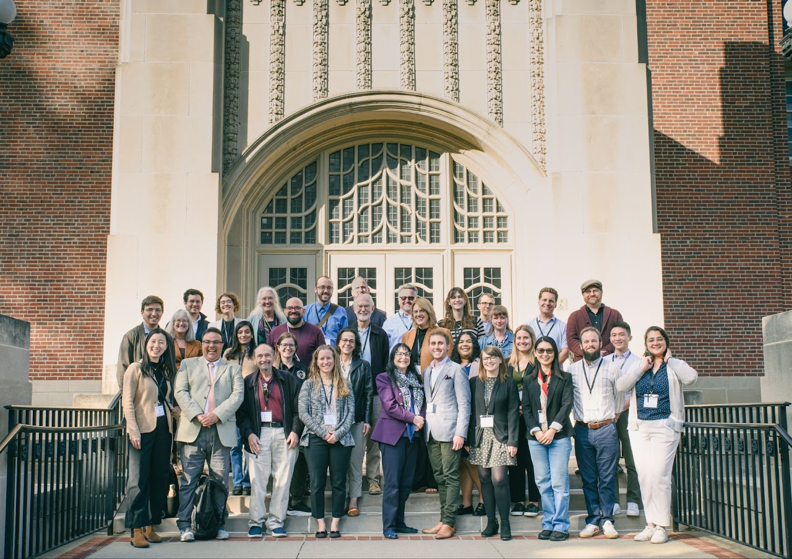

IT Conference
Identity Theory Conference 2025
Logistics
Trent Mize and Robin Stryker hosted the 2025 Identity Theory biannual conference on Oct 10th and Oct 11th, 2025 at Purdue University in West Lafayette, IN.

Conference Program
Registration
If you plan to attend, please fill out this short registration survey so we know how many people to expect, and to help us with planning food and events: https://tinyurl.com/id-theory.
There is no cost to register.
Presentation Format
Paper presentations are 15 minutes max.
Flash presentations are 8 minutes max.
We will strictly enforce time to ensure fairness for all presenters and time for ample Q&A discussions.
Travelling to Purdue
Lodging
The conference will take place on Purdue’s campus in West Lafayette, IN. Purdue Union’s hotel is both the nicest hotel in the area and also in the building next to the conference. The hotel also includes a nice restaurant, bar, and coffee shop. We have secured a conference rate of $269 / night which is ~$100 below the normal rate. Book using this link by Sep 12 to receive the discounted conference rate.
Less expensive lodging options are available in West Lafayette and Lafayette via other hotels or AirBnBs but will require you to commute to campus for the conference and pay for parking.
Airfare
There are three options for flying to West Lafayette, IN – all with pros and cons:
- Purdue’s on campus airport (LAF): United Airlines now operates a regional jet to Purdue’s campus airport (LAF) every day! Note all flights into LAF connect through Chicago O’Hare (ORD). Pro: Fly directly into Purdue. No need to rent a car (take a Lyft or Uber for 2 mile ride to campus). If you want a rental car, there is an Enterprise office at Purdue’s airport. Con: Have to connect through O’Hare and United is the only airline that serves LAF.
- Indianapolis airport (IND): It is a 1 hr 15 min drive from IND to Purdue’s campus. Renting a car at the IND airport is very easy, or you can take a shuttle. Pro: IND is an excellent and easy airport. Con: Have to rent a car or take shuttle. Can’t always get a direct flight to IND.
- Shuttle services to Purdue’s campus: Lafayette Limo; Reindeer Shuttle
- Chicago O’Hare airport (ORD): It is a 2 hr 15 min drive from ORD to Purdue’s campus. Rent a car or take a shuttle. Pro: Easy to get a direct flight to ORD. Con: A far ride to Purdue and traffic through Chicago is unpredictable.
- Shuttle services to Purdue’s campus: Lafayette Limo; Reindeer Shuttle
Purdue maintains a list of other tips for getting to Purdue’s West Lafayette campus.
Uber and Lyft
Both Uber and Lyft are reading available around West Lafayette and Lafayette so a rental car within town is not required.
Restaurant Recommendations
We will have an informal happy hour with light appetizers Thursday night and a formal reception with heavy appetizers Friday night. We also have a larger dinner reservation for Saturday night (attendees pay for their own meals).
If you want to eat dinner on Thursday or Friday, these are some good choices that take reservations:
- 8-Eleven Modern Bistro. On campus (same building as hotel). Nice. Expensive
- Boilerhouse Prime. On edge of campus in walking distance. Good but very expensive
- Bistro 501. About one mile from campus in downtown Lafayette
- East End Grill. About 1.5 miles from campus in Lafayette
- Cellar Wine Bistro. Good wine selection and small plates + pizzas. Reasonably priced. Patio seating. Note only open Friday and Saturday night
- Nine Irish Brothers. Easy half mile walk from campus. Patio seating
These places are less formal and less expensive. Reservations not taken / not needed:
- Black Sparrow. One mile from campus in downtown Lafayette. Good beer and cocktail selection. Reasonably priced
- Sixth Street Dive. About 1.2 miles from campus. Tasty Tex-Mex and bar food. Very reasonably priced
- Adda Indian Cuisine. Walking distance from campus
Suggested Readings
Identity theory has a long history and continues to expand in exciting directions. For anyone who would like to learn more about the development of identity theory and recent advancements, we recommend the following as starting places. If you don’t have access, feel free to email tmize@purdue.edu for a PDF copy.
- Stryker, S. (2008). From Mead to a structural symbolic interactionism and beyond. Annu. Rev. Sociol, 34(1), 15-31.
- Serpe, R. T., Stryker, R., & Powell, B. (2020). Structural symbolic interaction and identity theory: The Indiana school and beyond (pp. 1-33). Springer International Publishing.
- Stets, J.E., & Burke, P.J. (2025). An overview of identity theory. In Handbook of Social Psychology. Edward Elgar Publishing.
- Stets, J. E., & Burke, P. J. (2024). Advances in identity theory. In Advances In Group Processes, Volume 41 (pp. 1-27). Emerald Publishing Limited.
For a book option with a comprehensive overview, we highly recommend:
Timeline for Presenters
Full paper presentations
- May 31: Initial draft due to tmize@purdue.edu. Please include a standard abstract of ~200 words (such as one for ASR or SPQ)
- Summer 2025: Written feedback from conference organizers (Robin & Trent)
- October 10-11: Full 15 minute presentation at conference
- (If interested in edited volume) January 2026: Revised drafts due based on organizer and conference feedback, which will then be peer reviewed
Flash presentations
- July 31: Revised abstract due to tmize@purdue.edu. Please format this as a standard abstract of ~200 words (such as one for ASR or SPQ)
- October 10-11: 8 minute flash presentation at conference
- (If interested in edited volume) January 2026: Full draft of article due, which will then be peer reviewed
Edited Volume
We plan to publish an edited volume of papers presented at the conference. As in past years, we intend to publish the volume with Springer (see the 2023 volume). Full, polished drafts will be due in January 2026 and submitted papers will be peer reviewed.
Funds for Travel
We have some funds available for presenting authors who could not otherwise attend the conference without travel assistance. We will make decisions about travel funds after abstracts have been accepted. Our tentative plan is to cover the hotel costs in the Purdue Union hotel for those awarded travel funds.